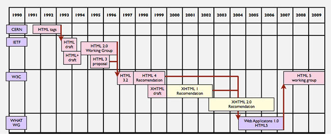

Evolución histórica de HTML
Tim Berners-Lee (Londres, Reino Unido, 8 de junio de 1955) es un científico de la computación británico, conocido por ser el padre de la Web.
Ante la necesidad de distribuir e intercambiar información acerca de sus investigaciones de una manera más efectiva, Berners-Lee desarrolló las ideas fundamentales que estructuran la web.
La idea de Tim Berners-Lee surgió hacia el 1989 y en los dos años siguientes definía el HTML como un subconjunto del SGML al que más tarde llamaría nivel 0.
Esta primera versión solamente marcaba encabezados, listas y anclas pero fue suficiente para que se creara la World Wide Web. Surgieron varias versiones de este primer HTML pero ninguna de ellas llegaría a convertirse en el estándar oficial. Lo más cercano fue el HTML 2.0.
Tim Berners fundaría el W3C (World Wide Web Consotium) en 1995 y poco después surgió el borrador de la tercera versión, HTML 3.0. Éste daba mucha más libertad de creación al diseñador web.
Así, en 1997 apareció el HTML 3.2, que fue la primera recomendación de HTML publicada por W3C.
Ya en el año siguiente, con la versión 4.0 se incluyen nuevas características, como el soporte para scripts, las hojas de estilo CSS o el XML. Cada año se van revisando las distintas versiones que se desarrollan y surgen el HTML 4.01 y el XHTML 1.0. El primero es una revisión y actualización de la versión HTML 4.0 y el segundo,
una adaptación de HTML al lenguaje XML.
De forma paralela, en el año 2004, se funda WHATWG, un grupo de trabajo formado por Apple, Mozilla y Opera. Este grupo tenía el propósito de crear un nuevo estándar que consiguiera llevar la web a un nivel mayor. Incluyeron mejoras en el apartado multimedia, con el uso de audio, video o la creación
de contenido 2D y 3D, entre otras.
Finalmente, en el año 2014 la W3C lanzó la recomendación para la versión más reciente, la HTML 5.0.
